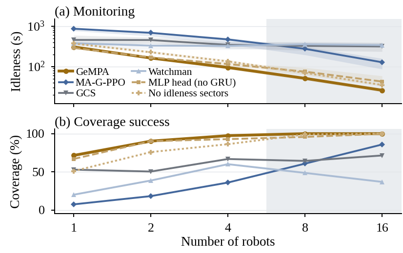
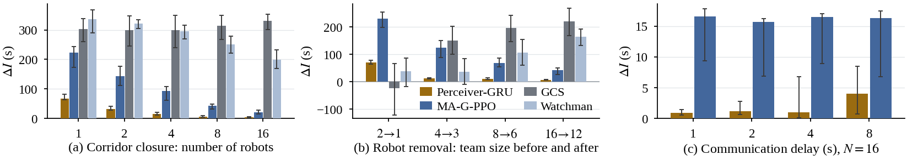
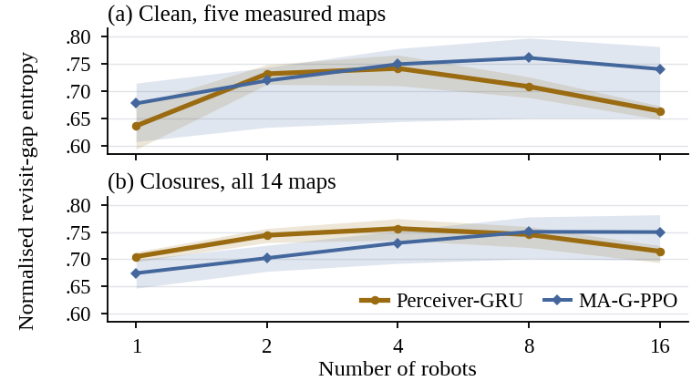
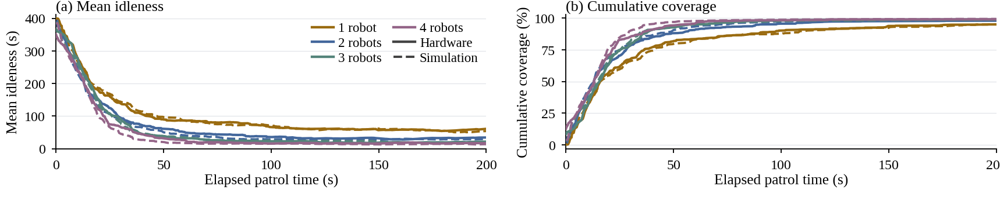
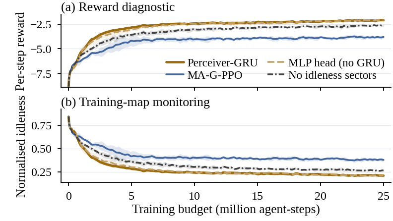

Visibility-based persistent monitoring with a variable team
Under review
A patrolling policy that must be rebuilt for every new site and every change in team size does not scale past the site it was built for. GeMPA is an algorithm for visibility-based persistent monitoring with a variable team, formulated so that one set of weights is deployable across sites and team sizes without retraining.
GeMPA is a shared recurrent policy trained with multi-agent PPO. It pools a variable number of teammate tokens by cross-attention, fuses them with an egocentric idleness summary and lidar ranges through two GRU layers, and outputs body-frame velocity commands. No patrol graph, task allocation or planner appears in the control loop.
Three choices in the observation make the policy independent of the site and of the team:
Local geometry arrives through range sensing, so the policy reacts to obstacles it was never trained on. Training uses 1,000 procedurally generated layouts with one to four robots and a budget of 25 million agent-steps.
GeMPA achieves the lowest mean idleness at every team size. Each doubling of the team lowers idleness by more than 40%, and the largest single reduction, 49.2%, occurs between eight and sixteen robots, entirely outside the training range.
| Mean idleness (s) | 1 | 2 | 4 | 8 | 16 |
|---|---|---|---|---|---|
| GeMPA (ours) | 304.3 | 161.9 | 94.3 | 50.8 | 25.8 |
| MA-G-PPO | 860.3 | 681.6 | 467.6 | 273.7 | 127.1 |
| GCS | 454.7 | 451.3 | 342.8 | 324.8 | 313.0 |
| Watchman | 376.4 | 328.5 | 322.8 | 354.9 | 338.4 |
14 held-out maps, equally weighted. Lower is better.

Three disturbances absent from training are introduced mid-patrol: corridor closures, robot removal, and communication delays. GeMPA shows smaller within-run idleness increases than MA-G-PPO in every condition. At sixteen robots the increase is 77% smaller under closure, 85% smaller under removal and 75% smaller under the longest delay.

Fresher monitoring does not come from a more regular schedule: revisit-gap entropy stays comparable to MA-G-PPO, while the deterministic cyclic route of the Watchman baseline scores lowest throughout, as a predictability measure should report.

The same checkpoint runs unmodified on physical quadrupeds at three sites covering 8×, 1.5× and 0.5× the training map area. Coverage agrees with matched simulation to within 0.6 percentage points at every team size, and idleness falls 3.7-fold from one to four robots on hardware against 4.0-fold in simulation.


@inproceedings{gempa,
title = {Generalizable Multi-Robot Patrolling with Recurrent Attention Policies},
author = {Author names withheld for review},
booktitle = {Under review},
year = {2027}
}